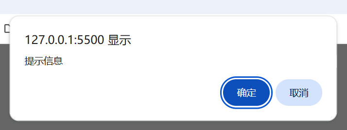

声明：本篇笔记部分摘自《Web前端技术 - 航空工业出版社》 ，遵循CC BY 4.0协议 。
JavaScript 是一种高级、解释型编程语言，主要用于网页开发。它运行在浏览器中，能动态操作网页内容（如DOM）、处理用户交互、发送网络请求等。特点包括：
动态性 ：无需编译，代码可直接运行。面向对象 ：支持基于原型的继承。事件驱动 ：通过事件监听响应用户操作。跨平台 ：几乎所有浏览器都支持。
常与HTML、CSS结合使用，现代框架如React、Vue使其功能更强大。Node.js扩展了其用途，可用于服务器端开发。
指开发者自定义的变量名、函数名、属性等名称。
JavaScript中的标识符命名规则：
由字母、下划线_、美元符号$和数字组成；
不允许以数字开头；
不允许使用关键字和保留字定义标识符（如char）。
标识符的常用格式
全大写命名法：REDBAG（常用于常量命名）
驼峰命名法：redBag（常用于函数命名）
帕斯卡命名法：RedBag（常用于类名和构造器命名）
下划线命名法：red_bag（常用于变量命名）
关键字，指JavaScript预先定义好的单词，被赋予了一定的意义。
常见关键字：break、case、catch、continue、debugger、default、delete、do、else、finally、for、funciton、if、in、instanceof、new、return、switch、this、throw、try、typeof、var、void、while、with。
保留字，指将来可能使用的关键字，是为js发展空间预留的一些单词。
常见保留字：abstract、boolean、byte、char、class、const、double、enum、export、extends、final、float、goto、implements、import、int、interface、long、native、package、private、protected、public、short、static、super、synchronized、throws、transient、volatile。
与Python类似，JavaScript是一种弱类型语言 ；与C/C++不同，在声明变量时无需确定变量的数据类型，也可以给变量赋予不同类型的数据，JavaScript 会根据上下文自动进行类型转换。
1 document .write ("<div>输出的内容</div>" );
直接将元素 加载到页面上（加载的不是文字，而是一个标签 ）
在控制台输出内容，多用于打印相关变量的值，进行调试。
多用于触发相关事件时，弹出相应的警告信息(如关闭标签时询问是否保存)。
1 var is_confirmed = confirm ("提示信息" );

需要确认某项操作，而不仅是通知用户时，使用次方法弹出一个包含"确定"与"取消"按钮的弹窗。
用户点击其中某个选项时，会返回true(确定)或false(取消)。
1 var input_info = prompt ("提示信息" );
ES6 推荐使用)1 2 3 4 5 6 const name = 'Alice' ;const age = 25 ;const message = `My name is ${name} and I'm ${age} years old.` ;console .log (message);
1 2 3 4 5 6 const name = 'Charlie' ;const age = 35 ;const message = 'My name is ' .concat (name, ' and I\'m ' , age, ' years old.' ); console .log (message);
其中，模版字符串 具有以下优点，一般是最佳的方案：
更简洁易读
支持多行字符串
可以直接嵌入表达式 ${expression}
自动处理类型转换
js中的注释方式与C/C++类似,使用下面两种格式进行注释：
1 2 3 4 5 <button onclick ="alert('清除缓存成功！')" > 清除浏览器缓存</button > <a href ="javascript: alert('弹窗内容')" > 点击这里显示弹窗</a >
1 <script src ="js文件路径" [async | defer ]> </script >
一般将外链js的标签写在<body>的末尾，方便浏览器优先加载网页内容，提高响应速度。
async属性(可选)表示异步下载同步执行 ,即下载js文件时不阻塞HTML的解析和显示，js文件下载后立即执行。
defer属性(可选)表示异步下载异步执行，即即下载js文件时不阻塞HTML的解析和显示，等HTML解析渲染完成后再执行文件。
与Python类似，JavaScript是一种弱类型语言 ；与C/C++不同，在声明变量时无需确定变量的数据类型，也可以给变量赋予不同类型的数据，JavaScript 会根据上下文自动进行类型转换。
1 2 3 4 5 6 7 var a = 1 ;"小明" ;const PI = 3.1415926 ;
ES6以前，声明变量时多用var关键字，格式为var 变量名;
ES6以后，增加了let关键字用于声明便联合，语法格式同样为let 变量名;
声明常量使用const关键字；常量一般用全大写命名，在程序运行中的值不变化。
使用var与let的区别：
let支持块作用域(循环体、函数体等)，var不支持。在同一个作用域中，var关键字可以重复声明一个变量，而let不可以。
“ES6（ECMAScript）是由Ecma国际（前身为欧洲计算机制造商协会）通过ECMA-262标
全局变量：在所有函数之外声明的变量。
局部变量：在函数体重声明的变量，或者函数的形参。
块级变量：在代码块(循环体、if分支)中声明的变量，只在对应的块中有效。
是JavaScript特有的数据类型，仅有Undefined一种取值，表示未定义的值。
定义一个变量但未赋值时，变量的值就是undefined。
也是JavaScript中特有的数据类型，仅有null一种取值，是一个空的对象指针。
与Undefined类型相似，null == undefined。
不同之处在于，null表示变量(或对象)不存在或无效，undefined表示变量没有被赋值。
有两个取值，true（真）与false（假）。
使用Boolean()方法，可将undefined类型与Null类型的数据转换成false。
JavaScript中，数值不分整数与小数，所有的数值都属于Number类型。
1 2 3 var a = 10 , b = -10 ;var c = 9.85 , d = 2.12E5 ; var e = 026 , f = 0x34 ;
使用Number()方法将其他类型的值转换成数值类型，转换规则如下表：
类型
Number()的值
Undefined
NaN
Null
0
true
1
false
0
NaN的全称为"not a numble"，表示非数字，但本身属Number类型。在JavaScript中，将一个数除以0不会报错，而是得到一个NaN的值。
对NaN进行任何计算操作，结果都是NaN。NaN不等于任何值，包括它本身。
因此，判断一个值是否非数字时，不应使用if (a == NaN)，而是使用isNaN(a)方法。
此外，在大数据方向，经常使用Number(Null) = 0的特性来将空值化0。
是由多个Unicode字符组成的字符序列 ，可由一对单引号（‘’）或双引号（“”），但是需要正确配对。
常用转义字符见下表：
字符
含义
字符
含义
字符
含义
\'单引号
\b退格
\r回车
\"双引号
\\反斜杠
\f换页
\n换行
\tTab制表符
\eEsc字符
使用String()方法将其他类型的值转换成字符串类型的值，转换规则如下表：
类型
String()的值
Undefined
‘undefined’
Null
‘null’
true
‘true’
false
‘false’
与C/C++类似，JavaScript中同样有+、-、*、/、%、++、--、+=、=等算数运算符与赋值运算符，且用法相同，此处省略。
<、>、<=、>=的用法与C/C++相同。与C/C++不同的是，JavaSCript中除了使用==、!=进行比较，还支持===、!===的比较运算符。
前者在比较时会进行隐式类型转换 ，即将两者转换成相同的数据类型后再进行数值的比较。
后者不会进行隐式类型转换，且在比较数值以外，还会比较二者的数据类型是否相同。
JavaScript的流程控制语句语法与C/C++基本相同，此处只给出语法实例。
1 2 3 4 5 6 7 if (条件1 ) {1 else if (条件2 ) {2 else {3
1 2 3 4 5 6 7 8 9 10 11 switch (变量) {case 取值1 :1 break ;case 取值2 :2 break ;default :3 break ;
注意：此语句使用===进行匹配，即需要确保case中的数据类型与switch的相同，例如：
switch(字符型变量) {case "1"…… case "2"……}switch(Number(字符型变量)) {case 1…… case 2……}
1 2 3 4 5 6 7 8 9 10 11 12 13 for (var i = 0 ; i < n; i++) {for (var name in names) { for (var name in window ) {console .log (name);
多用于明确循环次数的场景
for(;;) {}的写法构成死循环，若无跳出逻辑会导致后续脚本无法执行。
多用于不明确循环次数的场景，或需要根据循环中的状态灵活决定是否继续循环的场景。
while循环可能一次都不进行，但do-while语句至少执行一次。
用于跳出所在的一层循环
用于终止此轮循环，立即跳转到判断是否进行下一轮循环
1 2 3 4 5 6 7 8 function 函数名(形参列表) { return 返回值;console .log (函数名(实参列表));
这种写法会被提升(hoisting)，即可以在定义前调用
1 2 3 4 5 6 7 8 9 10 11 12 13 14 const 函数名 = function (形参列表 ) {return 返回值;function 函数名(形参列表) {return 返回值;console .log (函数名(实参列表));
1 2 3 4 5 6 7 8 9 10 11 12 13 14 15 function putOut (function putIn (x, y ) {alert (x + y);return putIn (1 , 2 );function factorial (n ) {if (n <= 1 ) {return 1 ;return n * factorial (n - 1 );
在实际编程中，不仅存在来自客观世界的具体对象，还存在着一些为了解决问题引入的，较为抽象的对象。对象可以理解为属性和方法的集合，用户通过操作方法，访问或设置对象的属性，从而实现不同的功能。
1 2 3 4 5 6 7 var 对象名 = {function (参数列表 ) {
这种写法注意不要把方法的定义写成方法(): function {}
1 2 3 4 5 6 7 8 9 10 function 对象名 (参数列表) {this .属性 = 值;this .方法 = function (参数列表 ) {var 对象 = new 对象名(参数列表);
Object对象创建对象
object对象是JavaScript的内部对象，通过这样的对象来创建对象不需要定义构造函数，并且可以随时对其添加属性。
1 2 3 4 5 6 7 8 9 10 var 对象名 = new Object (参数列表)var user = new object (); name = "张三" ; age = 20 ;show = function (document .write ("姓名：" + user.name + "<br/>" )document .write ("年龄：" + user.age + "<br/>" )
变量用于存储某个对象的所有属性名，使用此语句输出对象的属性时，需要使用数组(对象["属性"])的方式，而不是对象.属性的方式，如下所示：
1 2 3 for (var a in user) {console .log (user[a]);
1 2 3 4 5 6 7 8 9 10 11 12 with (对象名) {console .log (user.name );console .log (user.age );with (user) {console .log (name);console .log (age);
未完待续，正在持续更新中……